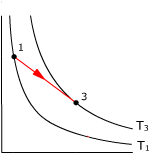
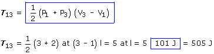
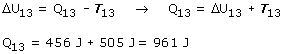

c)
P1 = 3 at
P3 = 2 at
n = 1 mol
V1 = 1 l
V3 = 3 l
T1
T3


No se sabe si el gas es mono o diatómico, por tanto se desconoce el calor molar y no se puede calcular directamente el calor intercambiado: Q13
Aplicando el primer principio de la Termodinámica:
